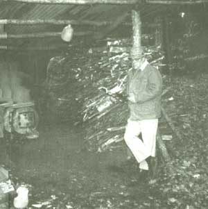
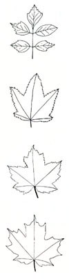
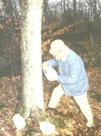
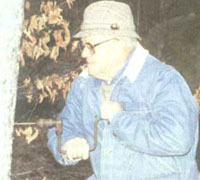
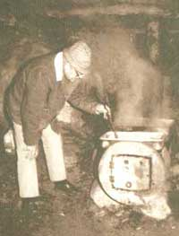
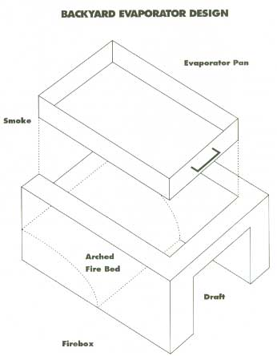
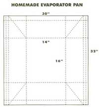

Going for the Golden Delicious
The author with his homemade water-pressure-tank
evaporating rig.
I SUPPOSE I GOT INVOLVED IN BACK-yard sugarin' the day my determination to make maple syrup ran smack dab into my good wife's determination that the boiling down not be done on the kitchen stove. I must say she has a point. You see, the main thing about making maple syrup is you have to boil off about 32 parts of water in the form of steam to end up with one part of maple syrup. That means that if you're boiling down a batch some Saturday afternoon on the kitchen stove and are aiming, say, for three quarts of syrup, you're going to put about 24 gallons of water into the air before the boiling's done.
Unless you've got one awfully powerful exhaust fan, you'll end up with water streaming down the walls and enough steam to impair visibility across the room. And, when things finally do clear, you're apt to find the wallpaper lying on the floor. Then, too, even if the batch doesn't boil over, which it can, the sugar spray from all that furious boiling gets all over the stove and is harder than blazes to get off. So, if you want to maintain a measure of domestic tranquillity, it's best to do your boiling-most of it anyway-outside, or in a handy garage or shed.
Anyway, the day I lost my kitchen privileges was the day I started figuring out in earnest what equipment I might need to set up a proper evaporator in a little sugar house. I was soon up to my eyebrows in catalogs and books on the time-honored methods used to make maple syrup. This all made good reading, but the smallest evaporator I could find was designed to handle up to 35 buckets, producing about 12 gallons of syrup during the season and costing better than $600. When I figured out the number of buckets I'd need to collect enough sap to make it worthwhile to run the evaporator-plus the holding tanks, instruments, and other gear, not to mention building a small sugar house to store everything in-I knew I was looking at an investment well into four figures. It became clear that I'd have to get into the business of selling syrup just to make ends meet.
I wasn't about to make that kind of commitment to sugarin', but I was just as determined to make my own syrup-say three or four gallons a year. I had my own sugar maples, plenty of firewood, an attraction to maple sugar like a bear has to honey, and enough Yankee blood in me to take pride in saving upwards of $56 a gallon in the process.
So the only solution I could come up with was to improvise. I scrounged up an old 18" x 24" commercial baking pan, built a firebox under it out of cement blocks, stuck some used stovepipe out the back, and produced what I consider to be a very satisfying batch of golden delicious right out there in the backyard.
With backyard sugarin', one of the things you have to do is plan ahead. Since the amount and type of equipment you'll need depends a good deal on the quantity of syrup you're planning to make, the first thing to decide is just how greedy you are.
For demonstration, let's assume you want five gallons of syrup by the end of the sugarin' season, and that-because you do have other things to tend to during the mud season, which is also sugarin' season-you can only do your boiling on weekends.
Naturally you wouldn't mistake a white birch for a maple, nor would you hang a
bucket on a telephone pole-although I've seen that done to get a rise out of city folks.
With that decision out of the way, we can make the following calculations:
For each quart of syrup you'll need one tap hole in a sugar maple, assuming you collect all the sap and don't spill too much of it on the way to the evaporator. Thus, for 20 quarts, you're going to have to drill 20 holes, set 20 spouts, and hang 20 buckets.
The number of maple trees you'll need depends on their size. You're not supposed to tap a tree under 10" in diameter, but you can put two taps in a tree over 18" in diameter and three in one that's over, say, 28". On a real big old maple you can hang even more buckets, but when I see some stately ancient maple fastened with five or six buckets it makes me think someone's bleeding it to death. So I try to make do with fewer buckets on more trees. In any case, getting back to that 20-quart plan, you're going to need four three-bucket trees, three two-bucket trees, and a couple of one-bucket trees (or whatever other combination adds up to 20 taps). Suffice it to say that you should plan ahead, know what maples you'll need to tap, and get permission to tap them if they don't belong to you.
According to the generally accepted rule of thumb, a professional wood-fired evaporator will consume a cord of firewood for each 25 gallons of syrup being made. Theoretically, therefore, you'd need 1/2 of a cord to produce your five gallons of syrup, but don't you believe it. Since you'll probably boil down on four or five separate weekends during the season and will be using a homemade evaporator that can hardly match the efficiency of the professional rigs, you'll probably need half a cord of good, dry wood to make your syrup.
Now, in boiling sap you want a good, roaring fire, not a slow burner like in your living-room fireplace. It doesn't make a lot of difference what kind of wood it is just so's it bums well. (You can and should bum pine and other softwoods that you wouldn't use in your fireplace: The pitch just adds to the heat.)
Finally, give some forethought as to how you're going to can and store your golden hoard. You'll want to save up enough containers during the year to hold whatever amount you produce-preferably metal cans, although glass jars with screw-on tops are fine if they don't break when you pour hot syrup into them.
My own choice is to save up coffee cans-the ones that come with plastic lids for resealing. The two-pound size holds half a gallon of syrup, so for five gallons you'd need to save up 10 two-pound coffee cans during the year. You can buy those lithographed cans made especially for syrup, but the half-gallon size costs better than $ 1.70 each, and then only if you buy in lots of 100 from the factory. As I said before, backyard sugarin' is about finding ways to make and store syrup without spending any money to speak of.
Figuring out what trees to tap, when to tap them, and just where and how to drill the hole and set the spout are important parts of backyard sugarin'. If you do these things carefully, it will increase the amount and quality of sap you'll get, yield a higher ratio of syrup to sap (which means less boiling), and may save you a lot of struggling through deep snow to taps that aren't worth the effort.
Naturally you wouldn't mistake a white birch for a maple, nor would you hang a bucket on a telephone pole-although I've seen that done to get a rise out of city folks. But four different kinds of maple trees native to the United States, all of which produce spring sap flows, can be tapped and will produce maple syrup. These four trees are the Sugar Maple ( acer saccharum ), also called the Hard Maple by furniture makers; the Silver (or White or Soft) Maple ( acer saccharnum ); the Red Maple ( acer rubrum ), also known as the Swamp Maple; and the Ash-Leafed Maple ( acer negundo ), more popularly known as the Box Elder.
The important fact is that the sap from the Sugar Maple contains about 3% sugar, whereas the saps from the other contains half to two-thirds as much. Also, the syrups made from these other saps are darker and less flavorful, so confining your sugarin' to Sugar Maples means less boiling and better syrup.
In picking out your trees, assuming you've got more than enough to give you the taps to meet your production goal, keep these things in mind:
The sap flowers best in healthy trees with an abundance of branches. Avoid sparsely limbed trees or ones with a lot of dead branches.
Pick trees that will be the easiest to get to come sugarin' time, when there may be several feet of snow on the ground. That's why old-timers put them along roads.
Since the sap will flow best on warm, above-freezing nights, pick trees with open southern exposures so that the warm sun on the trunk of the tree will get things running as soon as possible each morning.
Sugarin' time is that special part of late winter (call it early spring if you will), when the temperature drops below the freezing point at night but climbs well above freezing during the day, pushed up by a sun which is now climbing higher in the sky, getting up earlier in the morning, and lasting longer in the afternoon. The alternate freezing and thawing of the slowly disappearing snow gives it a granular texture, which skiers call corn snow and which they love to ski on in the warm sun. And the native folk up-country grumble about "mud season," get all worked up over the annual Town Meeting, and start tapping trees for their annual sugarin'.
The arguments about just when to tap (combined with sage observations on the weather and past experiences) can be just as heated as the politics. If you tap too early and get an extended cold spell, the taps can dry out and you may have to re-bore your holes. Or, if you wait too long, you may miss the first big sap run, which is prized for its high sugar content and fine quality.
I'd say the smart thing to do is to set a spout in one of your trees fairly early, and when you start getting sap flow during a day whose weather is fairly typical for that time of year, go ahead and set the rest of the taps.
Here are the things to pay attention to when you select where to drill the hole and how to set your spout:
Use a 7/16” bit to drill the hole. This is the right size to take the standard metal sap spouts you can buy at hardware stores in sugarin' country, or a spout made out of a whittled-down ½” dowel with a hole drilled down the center.
Drill your taphole about 1½” into good wood (which means maybe 2½” in heavy bark). This isn't a critical measurement-just be sure you're into good wood, where the sap flows, and have a hole deep enough to accommodate your spout. Drill the hole slightly uphill, so the sap flows outward, and keep turning the drill forward as you pull the bit out, in order to get as many shavings as possible out with the bit. (On days when the sap is flowing, you'll see it running out at you almost before you can get the spout in.)
Set the spout in the hole and send it home with a light hammer tap (on the front of the metal crest, if you're using a metal spout). The idea here is to set the spout snugly so it won't fall out of the tree, yet without splitting the maple wood above or below the taphole, where the sap would leak.
Remember: If you're standing on top of a four-foot snowbank when making your tap holes at the beginning of the season, those taps may be seven feet off the ground near the end of the season when the snowbank has melted. It's hard to collect sap from buckets seven feet off the ground.
Stop collecting sap and pull your taps when you: a) have made enough syrup to satisfy your needs; b) have run out of storage cans and/or your spouse's patience; c) find that the syrup is getting dark colored (the result of warm or fermenting sap) or less sweet; and/or d) notice that the sap has become cloudy or yellowish (although a cold snap can cause a return of clear sap). There are no specific rules for pulling your spouts. Don't worry about the holes: After awhile the sap just quits coming-they'll heal up by themselves, as they've done for generations.
Conventional sugarin' calls for 13- or 16-quart sap buckets made of galvanized steel (English tin in the old days, and before that wooden buckets). Galvanized buckets come with either flat or bowed covers to keep out rainwater and debris, and they have a hole in the upper edge where you hang the bucket from a small hook that comes with the metal sap spout. These buckets cost over $7 each (with covers) if you buy them direct from the manufacturer; more if you have to buy them locally. Since you're going to get enough sap from each bucket to make about one quart of syrup, conventional buckets can be a hefty investment, unless you're ready to commit yourself to their use over and over again for many years ahead. Most backyarders get around this expense by using almost any old container that will hold sap, from peanut-butter cans to children's beach pails.
If you plan to boil sap into syrup on your backyard rig, the pan it ends up in should
not be too shallow-thus risking scorching after all that patient work.
One of the most important developments in the backyard-sugarin' industry was the advent of the one-gallon plastic milk bottle, known affectionately hereabouts as the Idlenot Dairy Low-Fat Sap Bucket (since that happens to be the dairy that supplies our milk). If you're any sort of milk-drinking family, you can save up more than enough of these gallon milk bottles to provide you with all the sap buckets you'll need.
The way you hang one of these low-fat sap buckets is to cut a hole with a utility knife about ¾” square just below the collar, under the bottle top, and hang the bottle with sap spout entering this hole and the bottle set down over the back of the metal crest on the spout. Leave the cap on. The bottle will hang there nice as you please, even in a strong March breeze.
Maple sap, like cider or any fruit juice, can spoil, and care must be taken to keep it as cool as possible and not to store it too long before boiling it down. Sap which has "spoiled" has an unclear, slightly milky look, and if boiled down it will produce a dark syrup. Professional sugarers generally boil down sap within a day or two of its collection, if not the same day. If you're a backyarder, with other things to do during the week and no real desire to sit up all night tending the evaporator, you'll need to figure out not only how much storage capacity you'll need for the sap collected during the week, but also where to store it with the least chance of spoilage.
Returning to the original example of wanting to end up with five gallons of syrup by the end of the season, and assuming now that you will fire up your evaporator for one boil down on each of five successive weekends, count on producing one gallon each weekend, for which you will need 33 gallons of sap. (This is a reliable ratio for my part of New Hampshire, but 40 parts could be closer-depending on the location, weather, time of the season, and other mysterious factors.) Therefore, you will need at least that amount of storage, and it would be wise to have 50 gallons of holding capacity to accommodate heavy sap runs.
A couple of plastic or galvanized trash cans make good holding tanks for an operation of this size, if they can be spared from their normal duties. Naturally, they should be cleaned out well, but be careful not to use harsh soaps or chemicals, which might affect taste. Remember that your sap will undergo extended boiling, which will take care of bacteria.
Now that we've disposed of the task of collecting all that slightly foamy, faintly sweet, and rather colorless-looking sap, the next order of business is to convert it into that gooey, mystically sweet, and golden substance called pure maple syrup. The process involves boiling the sap so that the water evaporates off in the form of steam, leaving the sugar behind in the boiling pan. Sounds simple, doesn't it? And it really is, although at certain stages of the process, particularly as you're getting your brew close to being syrup, there can be terrifying moments.
In boiling down sap, the idea is to get the job done fast by maximizing the amount of steam coming off the surface. You do that in two ways. First, you use an evaporator pan that's relatively shallow (6" to 8") but with a lot of area, so as to have a large boiling-surface area relative to the amount of sap in the pan. Second, you design the firebox to get as much flame as possible directly on the bottom of the pan. That means the firebox should be somewhat shallow as well. And, since the flames tend to be swept backward toward the flue by the draft (rather than upwards against the pan), many backyarders build up the rear bottom of their fireboxes with sand so that the flames are forced to arch up against the pan-just like with professional rigs.
The firebox is constructed so that the pan (or pans) sits on the top, supported by the edge of the firebox or so that the pan can nestle down within it. The reason for nestling is to hasten the process by protecting the edges of the pan from the cold breezes. Or, if the pan does sit on top, you often find a row of bricks, set down along the edge of the pan to serve the same protective purpose.
How big a firebox you'll need depends on how much sap you want to boil down and how much time you can spare to do the job:
The more sap, the more surface area, the bigger the pan, and the bigger the firebox you'll need. My own new backyard evaporator, which has 864 square inches of boiling surface, seems to produce a consistent one quart of syrup per hour of boiling time.
However, if you plan to boil your sap all the way to syrup on your backyard rig, the pan it ends up in should not be so large that your syrup level is too shallow- thus risking scorching after all that patient work. As an example, a weekender who plans to end up with one gallon should probably not use a pan much over 14" x 17", since his syrup will be only 1" deep in a pan of that size (there are 231 cubic inches per gallon).
On the other hand, if he uses an evaporator pan only 14" x 17", and assuming for a moment that my own experience is reliable, it would take him close to 14 hours to boil down his 33 gallons of sap.
The local dump is well worth canvassing, if they'll let you in to scrounge around.
Scrounging, improvising, modifying: That's what sugarin' is all about.
There are two solutions to this dilemma. Our weekender can use a single large pan to speed up the main boiling and do his final boiling elsewhere (maybe in the kitchen if the wife is gone for the day), or he can use two pans atop his firebox-one, say, 12" x 16". which would give him some decent depth for the final boiling; and the other 16" x 24" for boiling fresh sap at the back of the firebox. The combination would give him 576 square inches of boiling area, requires a firebox opening of 16" x 36", and gives him a six-hour boil-down period.
I put all this down not to get into an argument over whether or not you can make a gallon of syrup from 33 gallons of sap in six hours on 576 square inches of evaporator pans, but rather to show you the kinds of calculations you have to go through to build a backyard sugarin' rig to meet your needs. Then, too, you may have to approach the problem from the opposite direction and size your rig (and how you use it) to a pan or set of pans that are already in hand.
Therefore, before we get into specific examples of a backyard evaporator, it's appropriate to discuss how you might come by a suitable evaporator pan without having to spend a lot of money.
If all that talk about needing special-size evaporator pans is discouraging you, don't let it. Professionally made pans, with spigots, fluted bottoms and so forth, are frightfully expensive, but you'll find it surprisingly easy to pick up secondhand bake pans at hotels or restaurant auctions that are sized close enough for your needs.
My first evaporator pan was an oversize 18" x 24" commercial lasagna pan that nobody wanted. It was covered with old lasagna, but after a good cleaning I found I had an excellent steel pan of old-time quality, and it has served me well ever since.
It's also not very hard to make your own pans out of galvanized sheet metal. A 14" x 16" pan can be made out of a 30" x 32" sheet of metal. With corners mitered, folded around the ends, and locked in place, an evaporator pan needs no welding and very little cutting. The bending, particularly working out the corners, takes some doing and a lot of hammering, and while the heavier gauges of metal make better pans, it takes a lot more pounding to get them into shape. The metal for this pan might cost you $5 or $6 in a sheet-metal shop. Experimenting, improvising, modifying. That's what backyard sugarin' is all about.
Making your own backyard evaporator is a process of sizing up what materials you have lying around your place, what you can scrounge up elsewhere, and putting together something that will get a lot of hot flames against the bottom of your evaporator pan with a reasonably efficient use of firewood and with some degree of fire control.
If you somehow happen to be related to a building-supply dealer, maybe you can get him to give you some "irregular" cement blocks to build your evaporator out of. Or perhaps a local plumber might have some discarded water-pressure tanks out behind his shop. With an emery blade on your electric saw or a cutting torch, you can make a very professional-acting (if not looking) evaporator.
And with any luck, a heating contractor might have an old oil-storage tank he'll let you have, which would make up into a nice firebox, as well as some rusty old stovepipe-just the ticket for your smokestack.
The local dump is well worth canvassing, if they'll still let you in to scrounge around. I found two very serviceable water-pressure tanks for myself, a third for a fellow backyarder, and about eight feet of serviceable 8" stovepipe for my evaporator. Fifty-gallon drums make good evaporator fireboxes, and (if you can find reasonably clean ones) sap storage tanks. I like to think that finding such items in the local dump and putting them back into useful service is a very commendable aspect of sugarin'.
Each backyard sugarer differs in his production goals-and therefore in the size evaporator he will need-and in the materials available to him and in his skills in making do with what he can get.
My own sugarin' rig-which has evolved out of years of experimentation, observation, and trial and error-is a resurrected water-pressure tank set up off the ground on a couple of fieldstones. It has been modified (with a blowtorch) to accommodate two boiling pans, both fabricated out of folded sheet metal. The rear pan is a larger, "primary boil" pan, and the front is a smaller pan for finishing.
The rig is located under a lean-to, made out of small tree logs stretched between a few large boulders in that area, and the roof is made out of salvaged sheet-metal roofing. A length or two of old 8" stovepipe runs from the evaporator up through the roof, and there is a 90° bend at the top which can be turned downwind to create a venturi to improve draft up the chimney.
My storage facility consists of two former fruit-juice drums from which I ladle the fresh sap directly into the rear pan.
On the northeast side of my lean-to I stack firewood- mostly broken branches and dead limbs collected from nearby woods during the year. This helps protect the area from the cold northeasterly breezes that make nighttime sugarin' a bit cold.
A good way to cover the boiling-down process might be to take you right through it, step by step, using my own two-pan, converted water-pressure-tank evaporator as an example. Naturally, you'll run into problems and crises with a rig of your own design, but I hope that by looking over my shoulder you'll avoid some of the more obvious pitfalls and perhaps see an improvement you might care to pass along to me.
Having collected enough sap in the storage drums (about 50 gallons) to insure ending up with no less than six quarts of syrup in the front pan (to avoid scorching in my finishing pan), I ladle a good 2" of sap in both pans before starting the fire. Fresh sap should continue to be ladled into the back pan to maintain an approximate 2" level as water is boiled off, and to replace boiling sap which I ladle up to the front pan to maintain its level.
Since the coffee can I use to ladle boiling sap gets a bit too hot to handle barehanded, I made up a little handle for it: It's a piece of green birch-a small branch coming out from a main stem. If you split the branch in toward the stem, you can slide the can into the split and it will stay there without fastening. (At least it did for me.)
During the boiling you'll notice some scummy-looking foam building up around the edges of your pans. This is a natural byproduct of the boiling and should not cause any alarm. Since it tends to reduce the boiling-surface area, though, it should be skimmed off from time to time. I use a kitchen strainer and simply pitch the foam off into the snow. Any residual foam in the batch will be removed when you filter your syrup.
A good candy thermometer is useful here because, as sap boils and gradually thickens, its temperature goes up due to the increased sugar content. Thus, temperature is a good measurement of the progress toward, and arrival at, the syrup stage. When it has risen 7°F above the temperature of boiling water at the same place and time (get a reading from some boiling water, and add 7° to that to get the measurement you're looking for), you're where you want to be.
As the boiling proceeds and I continue to ladle boiling sap from the rear to the front pan, I finally run out of sap, first in my storage drums and then in the rear pan. Since I cannot remove the rear pan (doing so would leave a big hole in the firebox, ruining the draft), I simply shovel snow or pour water into the back pan when the sap level gets too low for comfort. The back pan then gives me a handy source of warm (then hot) water for rinsing my filter felts and other pieces of equipment.
But all of a sudden (and I mean sudden), the foaming bubbles come together and it appears that the
whole batch will boil over.
Never let your pans dry out over the flame. They'll scorch and be the devil's own to get clean. If a pan is scorched badly enough, pitch it out. Otherwise, clean it with a sharp-bladed instrument (putty knife, chisel, or paint scraper), hot water, a heavy-duty detergent, and a good scrubber. Some backyard sugarers also recommend adding white vinegar to the hot water to loosen the burnt sap. In any event, scrub hard!
Keeping an eye on the lowering depth of syrup in the front pan, the character of the bubbles, and the thermometer, I begin to let the fire die-maybe push some toward the back, open the door to let cool air into the firebox, or even remove an excess log or two. My plan is to get as close to finished syrup as possible without the batch boiling over, then ladle and pour it into waiting half-gallon (two pound) coffee tins.
But all of a sudden (and I mean sudden ), the foaming bubbles in the syrup come together, and the whole batch starts rising up in the pan, and it appears that it will boil over-a major crisis in backyard sugarin'. One solution is to shovel snow directly into the firebox. It works fine, particularly if you're finished boiling anyway. Another solution-the time-honored one-is to touch the surface of the boiling syrup with a bit of butter on a stick or a piece of bacon. Like oil on troubled waters, the boiling magically subsides.
Finally, I ladle the day's production run into coffee tins, filtering it as I do so. The syrup has something in it called niter, which would settle out at the bottom of the can, make your syrup cloudy, and maybe give it a bitter taste if not filtered out. In my early sugarin' days I lined a kitchen strainer with water-resistant paper towels. They worked fine, but the filtering took forever. So I acquired a piece of regular filtering felt (available in most country stores selling sugaring equipment), and I must say it's far superior to paper toweling. Of course it can be rinsed out (don't launder it with detergents) and used over again many times. Before filtering hot syrup through a felt filter you first have to moisten it with hot water, and you can rinse it out between pourings to get rid of accumulated niter.
When the syrup level in the front pan gets too low to ladle conveniently, I simply pick up the whole pan and pour directly from it. Don't try that too soon. Pouring hot syrup from a big pan takes some juggling.
So now I have six two-pound coffee cans full of red-hot syrup, and say I'm not exactly sure whether it's underboiled, just right, or overboiled. What I do is put the plastic lids on the syrup and head for the kitchen. There I bring the syrup back up to a boil in a large pot and check it again carefully with my thermometer and with a spatula for the aproning effect.
To suit my own taste for slightly thicker syrup I make sure the temperature is high-7°F to 7.5°F over boiling-water temperature. Dip the spatula in the boiling syrup and lift it straight up. If the syrup on the spatula drips off in regular drops, keep boiling. When the drops begin to hold together and the syrup tends to slide off in little sheets (or aprons), the batch is ready for canning. The aproning effect gives you a feeling for the syrup's consistency, and traditionally it isn't done until it aprons.
For home packing of syrup I prefer one-pound and two-pound coffee cans with plastic lids (which come on most coffee cans these days for resealing). You can save up what you need during the year, they're very clean (because they've contained a dry product), and you get a good seal (by using freezer tape around the plastic top after it is put on). You can use anything for storing your syrup provided it is really clean, won't break when you pour hot syrup into it, and can be sealed. Glass jars with screw-on tops are fine if the seal in the top is still intact.
I don't want to get nostalgic or overly philosophical about sugarin', because it really is a fairly simple, down-to-earth, and practical procedure which yields a very useful product that almost everybody enjoys. But I've got to say that there is something magical about sugarin', and if you talk with people who make maple syrup, either in a big commercial evaporator or out in the backyard, you'll find out there's a lot of agreement on that fact.
Maybe it's the time of year-the warm sun climbing higher into the sky, warming the back after a long winter, turning the snow into piles of white corn, turning the brooks from trickles to torrents, starting the maple sap flowing-a sort of hint of the spring and summer lying ahead. Maybe it's the drip-drip of sap falling into buckets, the telltale aroma or the hissing sound of boiling sap. Maybe it's simply the magic of converting sweet water, as the Indians used to call it, into delicious golden syrup. But whatever it is, it's there.
Editor's note: Rink Mann's book, Backyard Sugarin', from which this is excerpted, expands greatly on the subject of backyard sugaring. In addition to offering much helpful insight, the book details plans for over ten different backyard evaporators. It costs $10.45 postpaid and is available from The Countryman Press, P.O. Box 175, Wood-stock, VT05091: or by calling 800/245-4151. All material © R.E. Mann, Jr.
|
 One of the most important developments in backyard sugarin' is the one-gallon plastic milk bottle. |
 Drill your tap hole about 1 1/2"" into good wood, which means maybe 2 1/2"" in heavy bark. |
 Waiting for sap to boil down into syrup during the backyard evaporation process. |
|
 |
 |
 |
|
 |
|
|